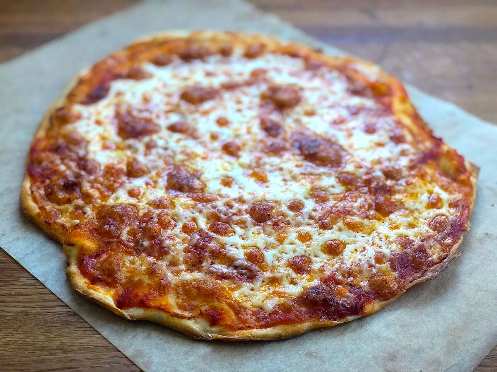

Pizza

Image above looks most similar to the pizza that I had at home. You can try making this at home
Ingredients
- thin pizza pan - you can buy this at mart
- Sliced onion - use a quarter of an onion
- Tomato Sauce - around 100ml should be enough
- 5 strips of Bacon - cut into small pieces and fry them
- mozzarella cheese packet - 1 should be sufficient
- Other suggested Toppings: sliced potato/garlic
Steps
- Spread the tomato sauce on the pizza pan
- sprinkle bacon, onion and Other suggested Toppings (if you have included) on the pizza pan with tomato sauce
- Spread the mozzareela cheese on top - ensure it covers the tomato sauce and the Toppings
- Place the pizza in the oven at around 170 Degrees Celsius for around 10 - 15 minutes
- Your pizza is ready!